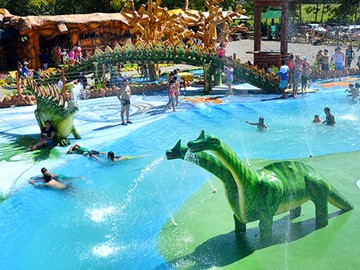

GRANADA denominada la capital del Ariari, es un municipio que se encuentra en el
departamento del Meta a tan sólo 95 Km de la Capital del Meta, caracterizado por ser una
región frutícola, agrícola y ganadera, su clima es cálido por ser parte de los llanos orientales.
Granada cuenta con uno de los Hospitales “HOSPITAL DEPARTAMENTAL,” con una
infraestructura para generar atención médica y especializada a toda la comunidad y sus
alrededores.
COLISEO ALAN JARA es un espacio para eventos deportivos y de espectáculo.
El PARQUE LA PAZ es un espacio de zonas verdes y recreativas para los niños
y la comunidad en general.
PARQUE LA VIDA COFREM un lugar agradable con amplias zonas recreativas, cabañas y piscinas.
PARQUE ACUATICO KABOB, más conocido como el parque de los dinosaurios, es un sitio con llamativas
atracciones alusivas a los dinosaurios ubicado Km 3 Vía Fte de Oro.

RIO ARIARI hermoso y majestuoso por su color y temperatura, muchos turistas vienen de muchas partes
a disfrutar del famoso paseo de Río, la Reggatta o canotaje.
Los hermosos atardeceres con diversidad de colores es algo que identifica a esta Región de los llanos
orientales (Puente Alcaravan)
FESTIVAL DE LA COSECHA LLANERA Es una de las fiestas patronales más importantes, la cual se celebra e
n agosto de cada año en conmemoración de todos los productos que se producen en la región.
SANCOCHO DE GALLINA uno de los platos típicos de mayor consumo en Granada.
CARNE A LA LLANERA es el deleite de todos los visitantes en esta hermosa Región, pues es imposible
venir a Granada y no deleitarse de este delicioso y exquisito plato.
EL JOROPO es una de las representaciones culturales más notorias en la región, a la cual los
niños empiezan a entrenarse desde sus escasos 4 años, para luego representar y participar
en distintos eventos departamentales, nacionales e internacionales.
Video 60 Años de Granada